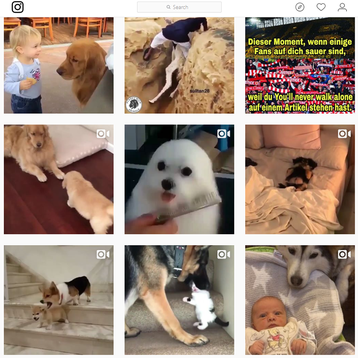

Models Of Good Practice
My main inspiration was from Instagram with a simple design with a navigation bar at the top. The grid layout is easy to read and follow. I tried to keep it all relatively simple, going for a table to contain important information making it easy to read. I went for a minimalistic style to not overwhelm people who view the site, and to make it clear as to the information I am trying to get across. The navigation bar uses abbreviations to make it fit better on mobile devices, as there would not be as much space as with a computer screen. The table idea was originally for the Glossary page, as it was a clear way to present the information and link the terms to their definitions with ease, but was adapted for the Comparison page as the layout would work for a side by side view of the jobs.

I also looked at other sites, such as Twitch and found a similar design to that of Instagram. Twitch’s “Theatre mode” was an inspiration for my decision to use a black background as it focuses your attention on the content in front of you and is also easier on the viewers eyes when viewed for long periods of time.
.
l